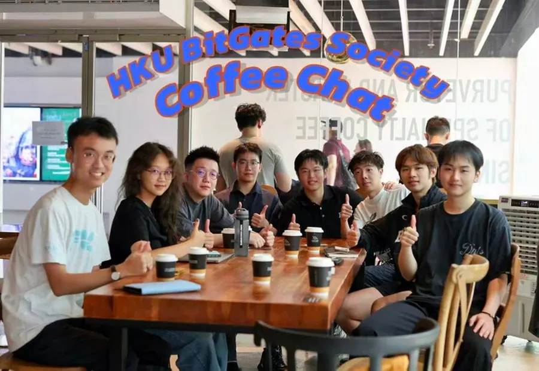
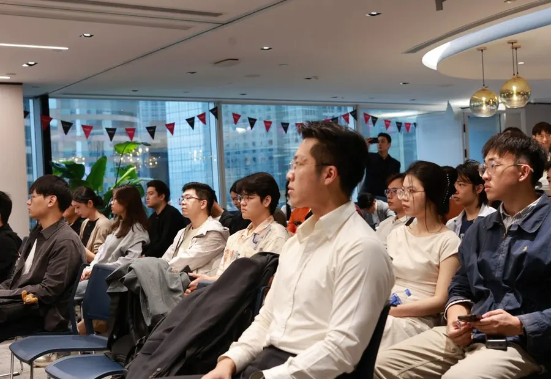
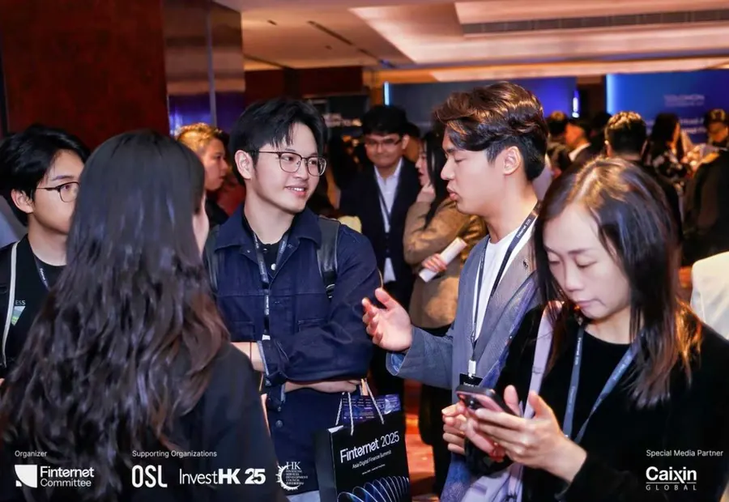
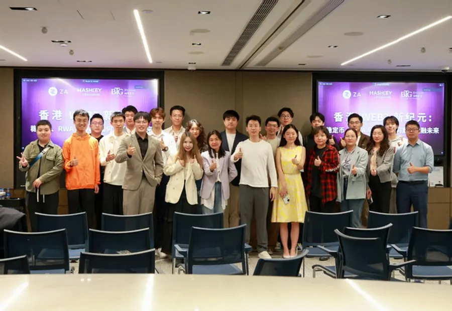
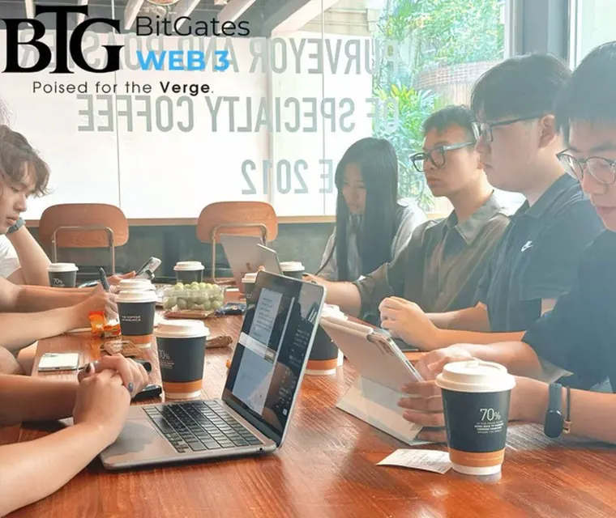
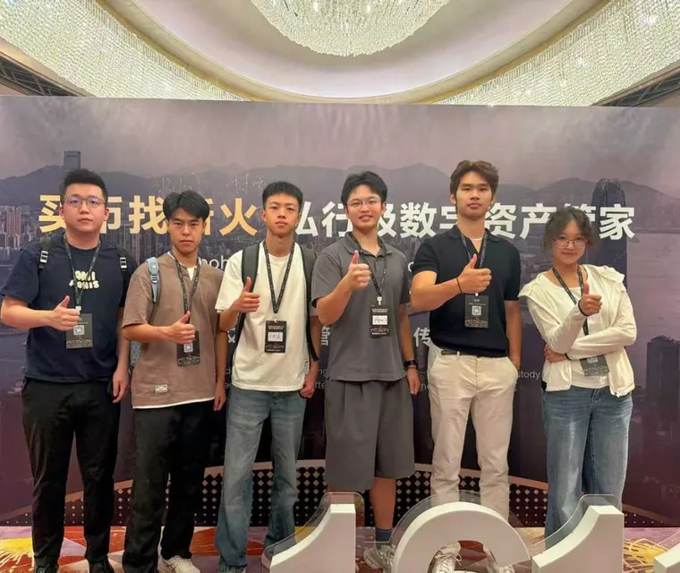

HKU BitGates Society · 港大比特盖茨学会
BitGates WEB 3
Poised for the Verge.
由香港大学在读学生及校友自发发起的 Web3 公益布道组织，连接港大青年、校友网络与香港前沿金融生态。
An alumni-initiated nonprofit Web3 community founded by HKU students and alumni, connecting young talent, alumni networks, and Hong Kong’s frontier financial ecosystem.
非香港大学官方机构。发起人与核心成员来自香港大学在读学生及校友网络。Not an official body of The University of Hong Kong. Initiated by HKU students and alumni.
2025 · Hong Kong
00
信任证据Proof of seriousness
01
认识 BitGatesKnow BitGates
港大比特盖茨学会成立于 2025 年，是面向香港大学在读学生及毕业校友开放的公益性 Web3 社群。
HKU BitGates Society was founded in 2025 as a nonprofit Web3 community open to HKU students and alumni.
Consentism
我们坚信以势聚人。在新周期的香港，建立一个稀有的能量场，筛选出一批志同道合的朋友，求是，守大道，寻真与美，创造好故事。
We believe momentum gathers people. In Hong Kong’s new cycle, BitGates aims to build a rare energy field for truth-seeking, principled, and story-making long-termists.
我们专注于 Web3 布道及连接最前沿的行业讯息，致力于让更多港大菁英校友群体认识、理解并参与 Web3 带来的生产关系革命。
We focus on Web3 education and frontier industry intelligence, helping HKU talent recognize, understand, and participate in the transformation of production relationships enabled by Web3.
BitGates 凝聚共识，加速学术界对金融创新的理解与普及，为香港长期可持续的金融行业注入港大 Z 世代能量。
BitGates builds consensus, accelerates financial innovation literacy in academia, and channels HKU Gen Z energy into Hong Kong’s long-term financial future.
依托港大在读学生及校友网络，由各学院意见领袖联合创建。
Built from HKU students and alumni, with opinion leaders across faculties.
不背靠任何币圈项目，建设纯粹的公益布道组织。
Independent from coin projects, built as a pure nonprofit education community.
联手多领域专家组成顾问委员会。
Supported by advisors from data science, digital assets, macro, markets, AI, law, and more.
层层筛选，凝聚共识，打造强节点和高粘性组织。
Curated with care, consensus, and high-density member relationships.
02
四大核心模块Four core programs
从轻量型咖啡畅谈到重量级企业联合讲座，BitGates 探索行业与 Z 世代青年的潜在链接。
From lightweight coffee chats to enterprise lectures, BitGates builds high-quality bridges between Web3 industry leaders and young HKU talent.
01
咖啡畅谈Coffee Chats
BitGates 定期于隔周周日在香港大学主图大楼旁的 Coffee Academics 举办咖啡畅谈。交流观点，结识朋友，凝聚共识，所有咖啡由 BitGates 买单。
BitGates hosts recurring Sunday coffee chats at Coffee Academics near HKU Main Library. Members exchange views, meet peers, and build consensus, with coffee covered by BitGates.
每次活动特邀一位来自 Web3 不同岗位的客座嘉宾分享行业洞见。往期嘉宾包括比特盖茨专家顾问、数据科学方向、现任职于中环某头部私募基金的 Logan Shen。
Each session invites a guest from a different Web3 role. Past guests include Logan Shen, BitGates advisor in data science and a professional at a leading Central-based private fund.

02
走进企业Company Visits
BitGates 积极嫁接学校与行业，已与 HashKey Exchange、Avenir Group、新火集团、众安银行、OKX Wallet 等超过 10 家知名公司建立链接并持续合作。
BitGates bridges campus and industry, with ongoing ties to more than 10 organizations including HashKey Exchange, Avenir Group, Sinohope, ZA Bank, and OKX Wallet.
我们曾联合 HashKey Exchange 与众安银行在中环交易广场举办主旨分享，也联合 OKX DEX 在启德办公室举办全港首次 Office Tour。
Past activities include a Central Exchange Square keynote with HashKey Exchange and ZA Bank, plus Hong Kong’s first OKX DEX Office Tour at the Kai Tak office.

03
活动陪跑Event Companion Program
BitGates 为成员提供公益性大型活动支持，覆盖信息整理与发布、天气提醒、节点提醒、团体票务对接、折扣申请、会后内容梳理与合照。
BitGates supports members through major industry events, including information curation, weather notes, milestone reminders, group ticket coordination, discount applications, post-event summaries, and photos.
2025 年 8 月，BitGates 组织新火科技发布会及 Bitcoin Asia 大会会员伴跑计划。11 月，BitGates 参与 HK FinTech Week、Finternet、新火科技发布会等边会陪跑服务。
In August 2025, BitGates organized member companion programs for the Sinohope Technology launch and Bitcoin Asia. In November, it supported HK FinTech Week, Finternet, Sinohope side events, and related programs.

04
行研教育Research & Education
依托港大学术优势，BitGates 基石成员来自传统金融、金融科技、统计学、计算机、人工智能、法学等前沿专业。
Built on HKU’s academic strengths, BitGates’ founding members come from traditional finance, fintech, statistics, computer science, AI, law, and adjacent fields.
在行研团队总监郑果带领下，BitGates 目前围绕三个方向形成投研小组：传统资产、加密资产、合规。
Led by Research Director Peter Zheng, BitGates currently structures research around three groups: traditional assets, crypto assets, and compliance.
03
研究报告Research Reports
BitGates 行研小组将持续发布传统资产、加密资产与合规方向的研究成果。你可以按主题筛选，或按时间倒序浏览全部文章。
BitGates Research publishes work across traditional assets, crypto assets, and compliance. Browse all reports by reverse chronological order or filter by topic.
按时间倒序Reverse chronological
该主题下暂无公开文章。
No published reports under this topic yet.
04
过往案例Selected cases
真实活动照片来自原始介绍资料，用于展示 BitGates 已经建立的企业连接与线下组织能力。
Selected photographs are sourced from the original introduction materials to show existing enterprise connections and offline execution capability.



合作企业及生态链接，部分示例Selected company and ecosystem links
- HashKey Exchange
- Avenir Group
- Sinohope
- ZA Bank
- OKX Wallet
- OKX DEX
- Bitcoin Asia
- HK FinTech Week
- Finternet
05
长期主义宣言Long-termist manifesto
坚定的长期主义价值投资者。
Steadfast long-term value investors.
在新周期的香港，确保做好周全准备，成为时代的接班人。
In Hong Kong’s new cycle, prepare thoroughly and become successors of the era.
Web3 只是一个载体，我们实际在追寻共识主义。
Web3 is a vessel. What we truly pursue is Consentism.
Poised for the Verge.
06
核心成员Core members
团队来自经济金融、数学风险管理、统计、量化、投资研究、青年发展与行业组织网络。
The core team spans economics and finance, mathematics and risk management, statistics, quant research, investment research, youth development, and industry networks.
创始人Founder
李屹冉 Ryan
- 香港大学经管学院，经济与金融学士HKU Business School, Economics and Finance
- 万成资本助理研究员Assistant Researcher, Wancheng Capital
- 香港浙江青年会理事Director, Hong Kong Zhejiang Youth Association
观点摘要Perspective
Ryan 认为，Web3 不仅是产业范式，也是一种前瞻性认知框架与生活哲学。《主权个人》所预见的第四次信息革命正在重塑权力结构，推动权力从中心化机构向个体主权转移。
Ryan sees Web3 as both an industrial paradigm and a forward-looking cognitive framework. The fourth information revolution described by The Sovereign Individual is reshaping power structures toward individual sovereignty.
互联网曾承诺打开认知边界并构建全球互联的数字文明，却因寡头垄断背离了去中心化与民主化的原初愿景。Web3 通过读、写、拥有，为 21 世纪个体重新赋予数字主权的可能。
The Internet promised open cognition and global digital civilization, yet oligopoly pulled it away from decentralization and democratization. Web3’s read, write, own paradigm restores the possibility of digital sovereignty.
2025 年是传统金融体系与加密金融生态深度融合的历史转折点。区块链底层技术、稳定币支付体系、元宇宙数字空间等概念正从理论构想转为日常应用。
He frames 2025 as a turning point where traditional finance and crypto finance converge, with blockchain infrastructure, stablecoin payments, and digital spaces moving from theory into daily application.
作为无项目方及资方的非营利组织，BitGates 希望帮助成员完成认知再塑，理解数字资产配置、非托管钱包与 Web3 底层技术革命，而非把行业误读为投机翻身。
As a nonprofit without project-side or capital-side backing, BitGates aims to help members reshape cognition, understand digital assets, non-custodial wallets, and the technical revolution beneath Web3, rather than treating it as speculation.
联席会长兼青年发展部部长Co-President, Head of Youth Development
刘畅 Sarah
- 香港大学经管学院，经济与金融学士HKU Business School, Economics and Finance
观点摘要Perspective
Sarah 强调，BitGates 不是为了追逐短期行情或制造热闹叙事，而是搭建长期、理性、持续进化的平台。它服务在校成员，也连接校友资源，关注行业前沿，同时强调结构化思考与独立判断。
Sarah emphasizes that BitGates is not built to chase short-term markets or noisy narratives. It is a long-term, rational, and evolving platform for students, alumni resources, frontier insight, structured thinking, and independent judgment.
在信息过载和情绪更迭极快的环境中，BitGates 希望建立低噪音、高质量的空间，让成员沉淀认知，而不是被市场波动牵着走。
In an environment of information overload and rapid emotional cycles, BitGates aims to create a low-noise, high-quality space where members deepen cognition rather than follow market volatility.
她认为加密行业正从叙事驱动走向结构重塑，机构参与长期化与制度化，监管框架逐渐明确，基础设施迈向可扩展与合规落地，现实资产上链也在探索新的价值协作方式。
She sees crypto moving from narrative cycles toward structural redesign: more institutional and long-term participation, clearer regulatory boundaries, scalable and compliant infrastructure, and new value coordination through real-world assets on-chain.
常务副会长兼顾问委员会二级市场行业专家Executive Vice President, Secondary Market Advisor
高祥峻 Jun
- 香港大学理学院，数学与风险管理双专业学士HKU Faculty of Science, Mathematics and Risk Management
- HKU Stock Connect 港大股联会长President, HKU Stock Connect
- 海燕资本股票分析师Equity Analyst, Haiyan Capital
- 香港陕西青年联合会理事Director, Hong Kong Shaanxi Youth Federation
观点摘要Perspective
Jun 认为，Web3 的终极竞争力在于打通物理世界与数字世界的价值闭环。区块链作为桥梁，将传统资产、信用体系、数字资产与智能合约深度融合，实现跨维度的自由流通与高效定价。
Jun believes Web3’s ultimate competitiveness lies in closing the value loop between physical and digital worlds. Blockchain bridges traditional assets, credit systems, digital assets, and smart contracts for cross-dimensional flow and efficient pricing.
他强调，Web3 的本质是权力结构的分散化和显性化，不是消灭中心，而是将 Web2 的隐性权力拆解为可量化、可监督、可制衡的节点权力。
For him, Web3 decentralizes and makes power explicit. It does not erase centers. It decomposes Web2’s hidden power into quantifiable node power that can be supervised and checked.
协理副会长兼投研团队总监Associate Vice President, Research Director
郑果 Peter
- 香港大学理学院，统计学士HKU Faculty of Science, Statistics
- 曾任中环某 Crypto 对冲基金量化分析师Former Quantitative Analyst at a Central-based crypto hedge fund
观点摘要Perspective
Peter 希望 BitGates 从专业角度，通过资产投研、链上数据、DeFi、合规等方面诠释完整的 Web3 蓝图。这里不仅有金融与技术，也有投资框架的确立和对未来认知的重塑。
Peter wants BitGates to explain a complete Web3 blueprint through asset research, on-chain data, DeFi, and compliance. The platform combines finance, technology, investment frameworks, and cognitive renewal.
BitGates 旨在构建跨学科对话平台，无论成员深耕金融、大宗商品、技术或法律，都可以在此深度探讨并达成共识。
BitGates aims to build a cross-disciplinary forum where members from finance, commodities, technology, law, and other fields can discuss deeply and form consensus.
07
组织架构Governance structure
BitGates 的组织架构以理事会、执行团队、顾问委员会与成员网络构成，服务港大在读及毕业校友。
BitGates is structured around a council, executive team, advisory committee, and member network serving HKU students and alumni.
BitGates
汇聚各院系与专业的港大在读及已毕业校友HKU students and alumni across faculties and disciplines
数据科学Data Science
数字资产Digital Assets
宏观经济Macro Economy
二级市场Secondary Market
文学历史Literature & History
一级市场Primary Market
合规法务Compliance & Legal
人工智能Artificial Intelligence
08
选择我们，与未来站在一起Stand with the future-facing builders
我们是一批理想主义、长期主义、迎接未来、不怕失败的 Web3 布道者。我们希望帮助更多人意识到、理解并加入这场生产关系的变革。
We are idealistic, long-term, future-facing Web3 evangelists. We help more people recognize, understand, and participate in the transformation of production relationships.
选择 BitGates，与一批踏实、善良、努力的青年站在一起。
Choose BitGates, and stand with grounded, kind, and hardworking young people.
港大学生及校友HKU students and alumni
加入社群，参与咖啡畅谈、企业走访、活动陪跑与投研教育。
Join the community for coffee chats, company visits, event support, and research education.
企业及生态伙伴Enterprises and ecosystem partners
共同举办分享、Office Tour、行业教育与青年触达活动。
Co-host sharing sessions, office tours, industry education, and youth engagement programs.
行业顾问及嘉宾Advisors and speakers
支持顾问委员会、主题分享、投研建设与跨学科对话。
Support the advisory committee, talks, research development, and cross-disciplinary dialogue.
Poised for the Verge.